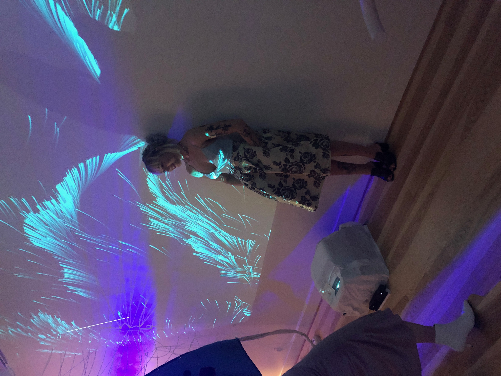
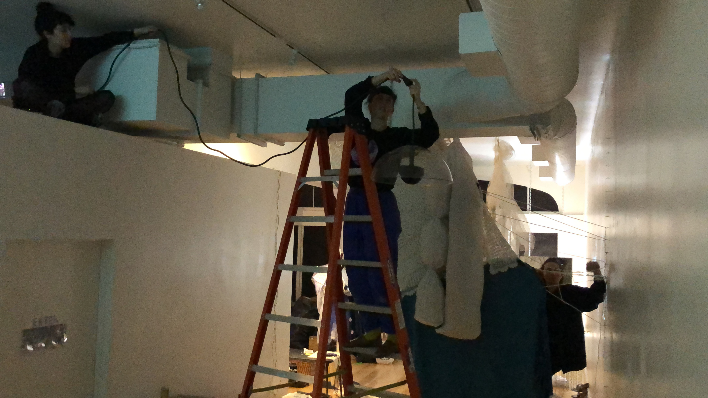

mass residue was a group installation that transformed a traditional gallery space in downtown Vancouver, WA into an interactive, expirimental exhibit featuring sculptures, videos, and interactive audio and visuals from an all-femme group.
i created a Perlin noise visual in Processing to be projected onto the "hallway" wall. using Kinect's skeletal tracking, the software program drew lines for the arms of visitors and the direction of the Perlin noise's flow could be changed based on the waving motion of the visitors. the flow was also reactive to the ampliltude of the audio in the space, the color being more vibrant the louder that it was and more muted the quieter it was.
while each artist had their own ideas and designs, the installation process was very collaborative and we all helped each other in any way that we could.
